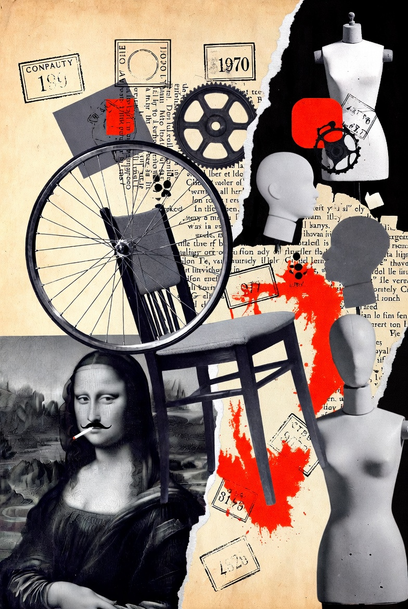
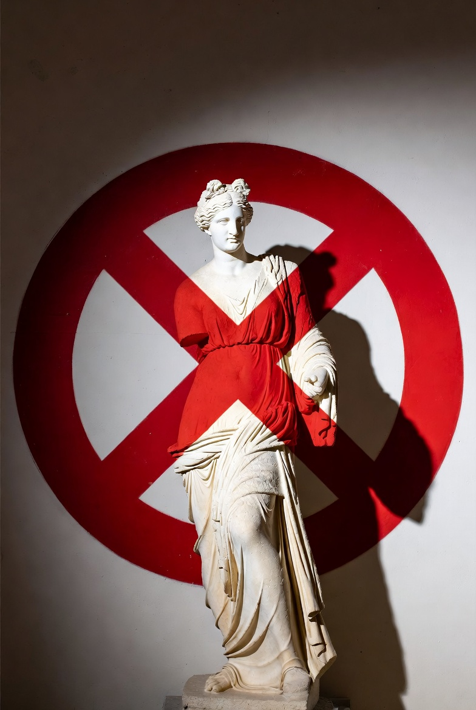
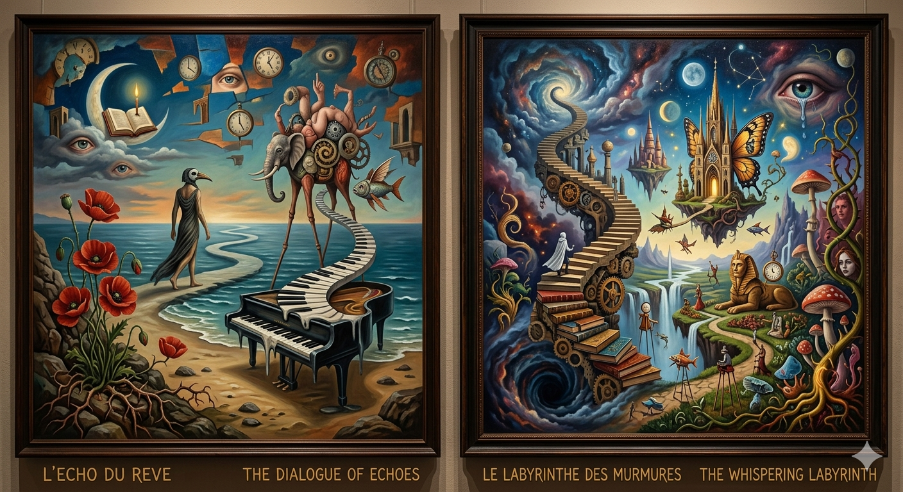

Dadaismo e Surrealismo
Arte come Rivoluzione
Il Contesto Storico e il Dadaismo


Le Radici del Cambiamento
- • Fine della Prima Guerra Mondiale
- • Crisi del Positivismo
- • Nascita della Psicoanalisi (Freud)
- • Rifiuto della razionalità borghese
"Contro la follia della guerra, l'unica risposta sensata è l'assurdo."

Marcel Duchamp
Il Re del Dadaismo
L'artista che ha trasformato un orinatoio in un'opera d'arte, sfidando il mondo intero a ridefinire cosa sia 'bello'.
Il Surrealismo


Salvador Dalí
Genio del Surrealismo
Il pittore che ha dato forma ai sogni e agli incubi, rendendo solido il tempo e visibile l'inconscio.